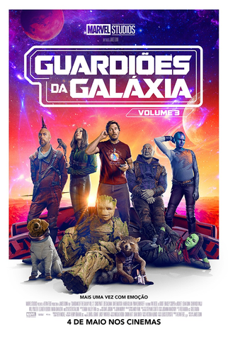

Guardiões da Galáxia (2014)
A história segue um grupo improvável de heróis intergalácticos que se unem para salvar o universo.
Peter Quill, um terráqueo sequestrado quando criança, se torna um ladrão espacial. Ao roubar uma
esfera misteriosa, ele chama a atenção de Ronan, o Acusador, que planeja usar a esfera para destruir planetas.
Quill une forças com Gamora, uma assassina e filha adotiva de Thanos; Drax, um guerreiro sedento por vingança;
Rocket, um guaxinim tecnológico; e Groot, uma árvore humanoide. Juntos, formam os Guardiões da Galáxia
e trabalham para impedir os planos de Ronan, salvando o universo.

Guardiões da Galáxia Vol. 2 (2017)
A trama explora a relação entre Peter Quill e seu pai, Ego, uma entidade cósmica com intenções sinistras
de remodelar o universo. Enquanto isso, a equipe enfrenta conflitos internos e desafios emocionais.
Gamora e sua irmã Nebula enfrentam sua rivalidade, Rocket lida com seus traumas e Drax desenvolve um
vínculo inesperado com Mantis. O filme combina humor, ação e emoção, culminando na derrota de Ego e
no fortalecimento dos laços entre os Guardiões, que se consolidam como uma verdadeira família.

Guardiões da Galáxia Vol. 3 (2023)
A trama final da franquia foca na origem de Rocket, um guaxinim que sofreu experimentos cruéis. Quando Rocket
é gravemente ferido, a equipe embarca em uma missão para salvar seu amigo e enfrentar o Alto Evolucionário,
o cientista responsável pelos experimentos.
O filme aborda temas como amizade, sacrifício e aceitação, enquanto Peter Quill lida com a versão alternativa
de Gamora. Após derrotar o Alto Evolucionário, os Guardiões celebram sua união, encerrando a saga com emoção e esperança.
